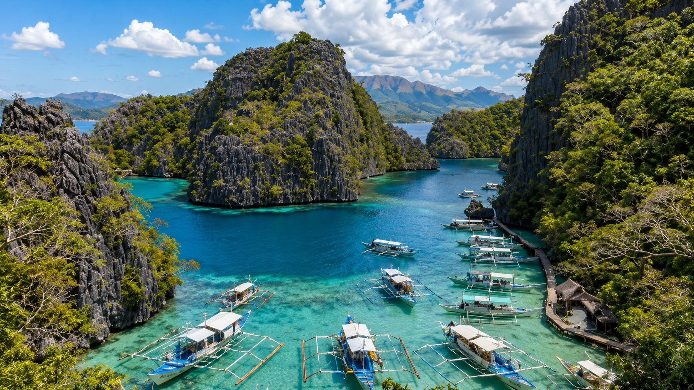
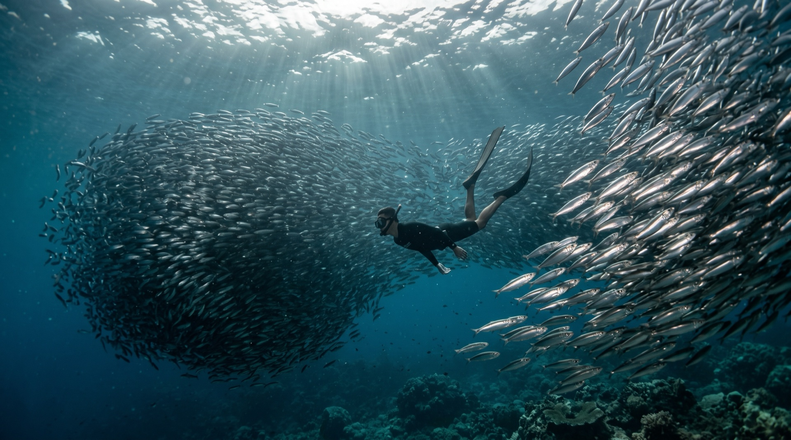
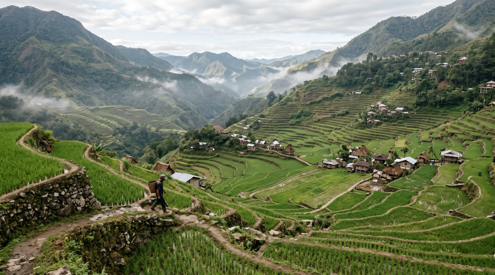
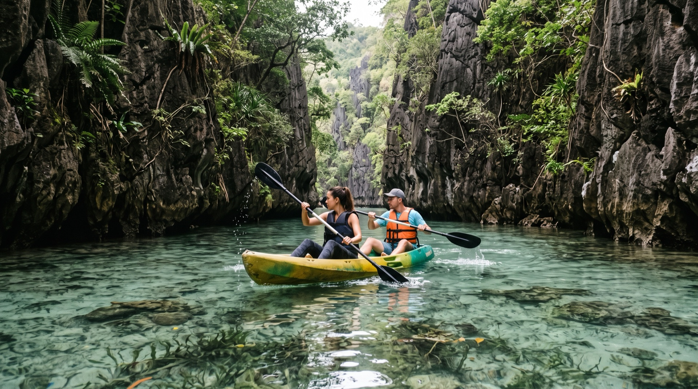

ABBEY'S ROAD • YOUR PHILIPPINES TRAVEL CONCIERGE | COPENHAGEN
BEYOND THE ORDINARY.
DISCOVER THE PHILIPPINES
Denmark's premier boutique travel concierge — crafting bespoke 4 & 5-star island hopping journeys, private outrigger banca charters, and authentic out-of-the-beaten-track cultural experiences across 7,641 islands.
SCROLL TO TRAVEL







EXPLORE BEYOND THE ORDINARY
BATANES • SAGADA • SIQUIJOR • APO ISLAND
From the windswept rolling green cliffs and stone houses of Batanes to misty mountain coffins in Sagada, enchanted waterfalls in Siquijor, and swimming with sea turtles off Apo Island.
COME FOR THE 7,641 ISLANDS. STAY FOR THE CONCIERGE CARE.
YOUR PHILIPPINE STORY
STARTS HERE.
Let Abbey's Road design your bespoke journey through paradise. Hand-selected 4 & 5-star island resorts, private outrigger banca charters, local expert guides with Baron Travel DMC ground handling, and 24/7 guest care.